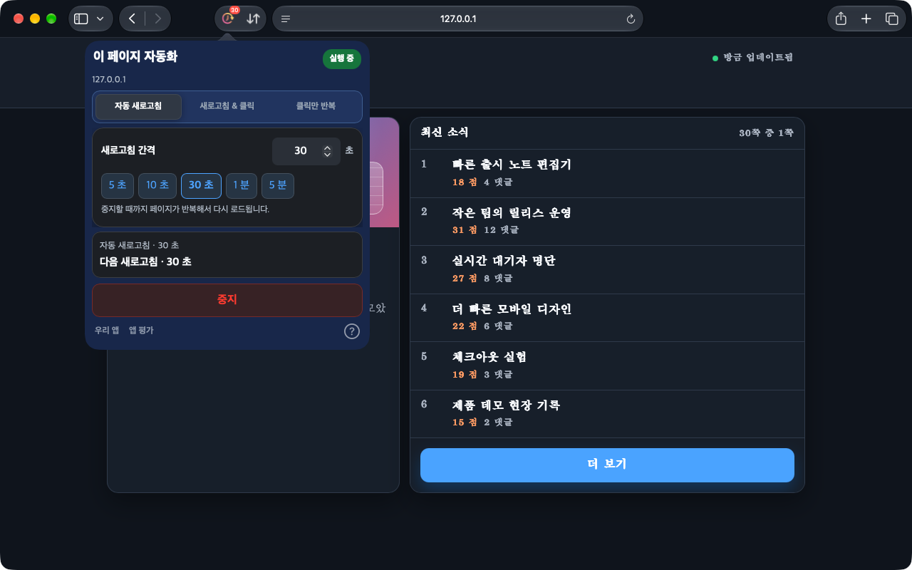
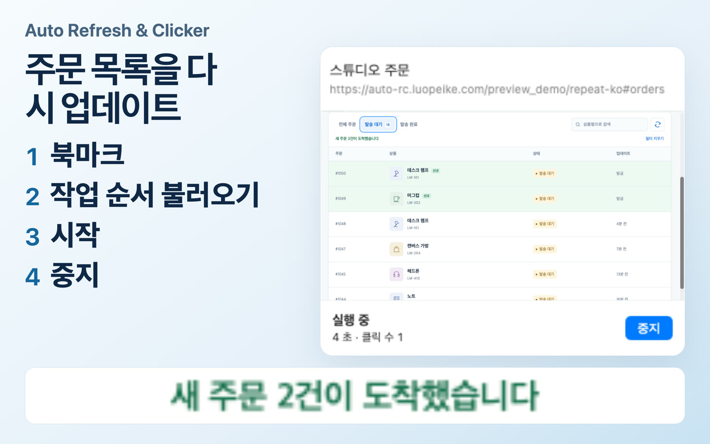
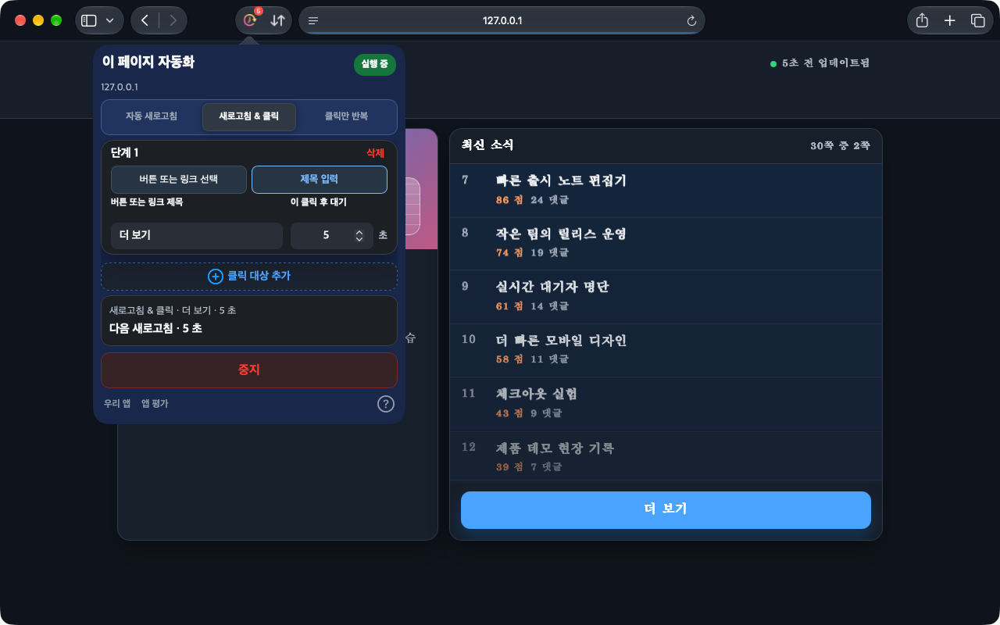
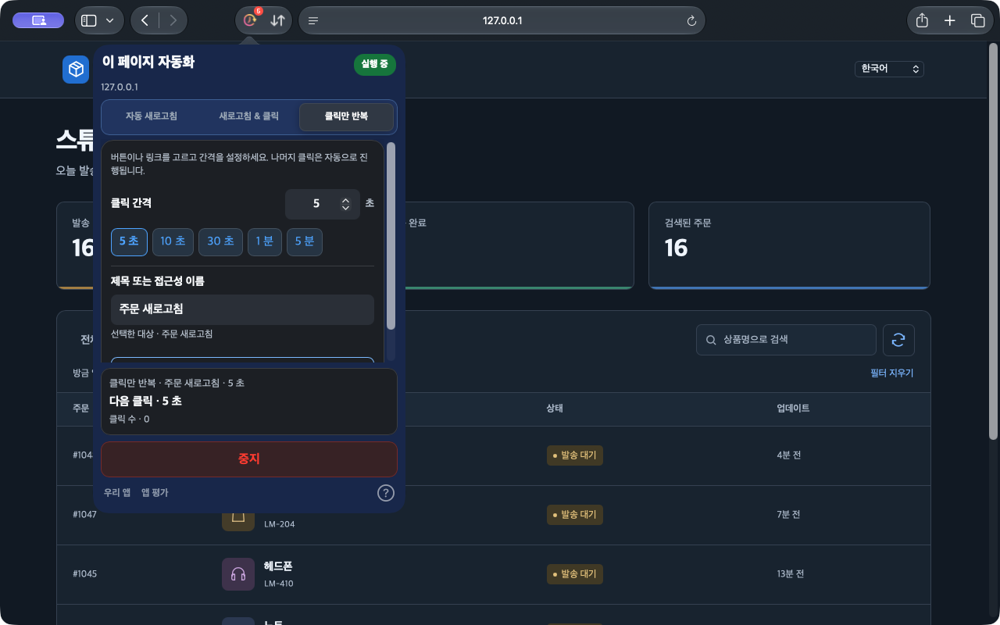

자동 새로고침
기본 시간이나 정확한 간격을 지정해 대시보드, 재고, 상태 페이지를 최신으로 유지하세요.
자동 새로고침 설정하기북마크에서 주문 목록을 열고 저장한 작업 순서를 불러오세요. 목록의 새로 고침 버튼을 일정 간격으로 누를 수 있습니다. 앱 안에서도, Safari 확장 프로그램에서도 사용할 수 있습니다.
같은 전체 URL에 여러 작업 순서를 이름을 붙여 저장할 수 있습니다. 그 주소에 다시 방문하면 필요한 순서를 불러와 확인한 뒤 시작하세요. 작업 순서는 설정한 앱 또는 브라우저에 저장됩니다.
설정 가이드 보기

기본 시간이나 정확한 간격을 지정해 대시보드, 재고, 상태 페이지를 최신으로 유지하세요.
자동 새로고침 설정하기
페이지에서 버튼이나 링크를 선택하거나 제목을 입력하세요. 새로고침 후 정한 순서와 대기 시간대로 클릭합니다.
새로고침 후 클릭 설정하기
페이지를 다시 불러오지 않고 클릭만 반복하세요. 아이콘 버튼도 고를 수 있어 목록을 업데이트하기 편합니다.
반복 클릭 설정하기iPhone / iPad · Mac
설치 후 앱을 열고 Safari 설정에서 확장 프로그램과 대상 사이트 접근을 허용하세요.
모드를 고르고 간격이나 단계별 대기 시간을 설정하세요. 클릭할 버튼이나 링크는 페이지에서 선택하거나 제목을 입력할 수 있습니다.
시작 후 실행 상태와 카운트다운을 확인하세요. 언제든 중지하거나 변경 사항을 적용할 수 있습니다.
북마크에 이름을 붙이거나 방문 기록에서 페이지를 다시 열 수 있습니다. 기록은 직접 삭제할 때까지 이 기기에 보관됩니다. 기록을 일시 중지하거나 지워도 북마크와 저장한 작업 순서는 남습니다.
개인정보iPhone, iPad, Mac 앱에서 웹페이지를 열거나 Safari 탭에서 확장 프로그램을 사용하세요. 데스크톱 Chrome용 확장 프로그램도 있습니다.
아이콘을 직접 고르거나 버튼과 링크의 이름을 입력하세요. 이름의 일부가 바뀐다면 와일드카드를 켜고 바뀌는 부분에 *를 입력하세요. 사용 가능한 대상이 하나로 정해지지 않으면 작업이 중지됩니다.
설치된 앱을 한 번 연 뒤 Safari 설정 → 확장 프로그램을 확인하세요. Safari 15.4 이상을 사용해 주세요. 계속 표시되지 않으면 macOS, Safari, 앱 버전과 설치 출처를 지원팀에 알려주세요.
현재 Safari 버전에서는 설정을 편집한 뒤 변경 사항을 적용할 수 있습니다. 요약에 현재 설정이 표시되며 중지를 누르면 종료됩니다.
현재 가격과 호환성은 각 스토어에서 확인하세요.